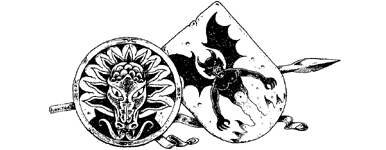

1
You leave Elzian under cover of darkness on a trading ship bound for Garthen. It is a trim vessel, lean-prowed and simple in design—one of a thousand such ships that sail the chain of land-locked seas and lakes dividing the northern and southern continents of Magnamund. Its passage along this great waterway called the Tentarias is unlikely to invite undue attention, and it is for this reason that the Elder Magi have placed you aboard. The nature of your voyage is secret, but you are not alone, for a guide has been chosen to accompany you on your dangerous mission. His name is Paido, a tall, ebony-skinned Vakeros, who is a master of the art of battle-magic. Among his fellow warriors he is a high-ranking lord, respected and honoured for his bravery and skill on the field of battle. Now, for the mission that lies ahead, he has exchanged his gold and scarlet robes for the clothes of a commoner, a roving adventurer with a sword for hire. It is a disguise you too have adopted to veil your true identity on the long voyage to the land of Talestria, where a rendezvous with royalty awaits you.
You sail westwards, a benevolent wind filling the triangular sail and skimming the ship across the still, blue waters. The hull seems to slide over the surface of the water rather than cut its way through, and you cannot help but wonder if Paido has conjured some magic to speed your passage. Your first port of call is the city of Talon, where food stocks and fresh water are replenished. Then the voyage continues along the Tentarias to the port of Orello, the last stopping place before your ship-bound journey ends at Garthen—crown capital of Talestria.
It is an hour past midnight when you dock at Varnos Harbour in Garthen, a sprawling network of quays and cracked stone jetties that shelter great fleets of merchants, traders, and dhows. Silently like a shadow, you disembark and follow Paido through the twisting harbour streets, slowly climbing the steep stairs that connect one level of Garthen to the next. Rusty lanterns cast pools of yellow light beneath the timbered balconies, illuminating the stalls of merchants and vendors who will haggle, brag, and barter in the crowded streets till dawn. Paido halts at an iron-shod door and raps the grille with the hilt of his blue-steel sword. A man’s face appears, stern and handsome, with smooth dark hair and keen, intelligent eyes. A smile of recognition softens his lordly features when he sees Paido. In an instant the door swings open and you are ushered inside.
The man’s name is Adamas, Lord Constable of the Royal Citadel, protector and cousin of Queen Evaine of Talestria. For centuries a strong bond of friendship has existed between the royal household and the magicians of Dessi, and when called upon by the Elder Magi to help you in your quest, Queen Evaine pledged her support without hesitation. She has volunteered the services of Lord Adamas, who is to ensure your safe and unhindered passage through Talestria to the borders of the Danarg. At dawn, after snatching a few hours’ sleep, you are taken by coach to the east city wharf, where an empty corn barge is waiting to ferry you up-river. Haulage is provided by eight large ghorkas—hairy, ox-like creatures from the plains of Slovia—which are harnessed to the barge by chains. They lumber along the cobbled towpath, continually kept in line by the stinging lash of the barge owner’s zull-hide whip. The next day the barge arrives at a small river village called Lona, where a detachment of Lord Adamas’ cavalry, resplendent in surcoats of scarlet and grey, provide you with horses for the cross-country journey to the fortified city of Phoena.
Ill news greets you in Phoena, the city of triple towers. Zegron, warlord of Xanar, ruler of the barren highlands of Ogia, has amassed an army of Drakkarim warriors. Three days ago they attacked the border town of Luukos to the north. The Talestrian garrison put up a brave and spirited defence, but they were hopelessly outnumbered by the bloodthirsty Ogian horde that drove through the perimeter walls with battering rams and engines of war. The Drakkarim razed Luukos to the ground, and only a handful of survivors escaped to tell of the dreadful battle.
{kind=link}

‘The situation is grave,’ reports Lord Adamas, on returning from an emergency conclave of his fellow Talestrian knights. ‘For decades Zegron and his minions have raided our northern territories, but never before with such determination and strength. We must mobilize our army for war, for it is war that Ogia has invited by its unforgivable attack on Luukos. I must return to Garthen to muster my retainers in preparation for battle and inform the Queen of the evil that threatens her realm. I can no longer escort you to the Danarg, though your quest must proceed in spite of all that conspires against it.’
He sends for his scribe, who arrives with helpers laden with the paraphernalia of his craft. He dictates an order of safe conduct and sets the impression of his signet ring into the hot wax seal before passing the parchment to you.
‘Our northern people are a frontier breed, wary and suspicious of strangers. If challenged, show this Pass and your safe passage will be assured by all who are loyal to Queen Evaine.’ (Mark this Pass 2 on your Action Chart as a Special Item which you carry tucked inside your tunic.)
Early next morning Lord Adamas accompanies you and Paido to the main square of Phoena; it is from here that your quest begins. The first leg of your journey to the Danarg will take you north to the town of Tharro which nestles in the fertile uplands of Talestria. There are two ways of reaching the town: you can travel by road or you can take a barge along the River Phoen. Consult the map before deciding which route to take.
If you wish to travel to Tharro by barge, turn to 271.
If you prefer to ride to Tharro along the Great North Road, turn to 109.
Footnotes
[2] Many sections in this book assume that you possess the Pass, therefore you should not discard it during this adventure.